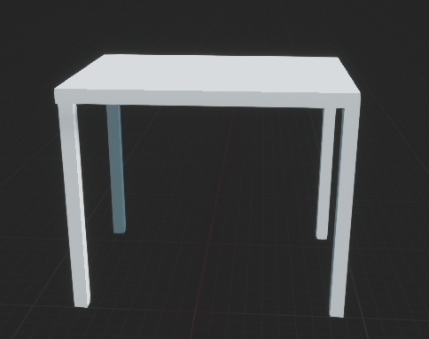
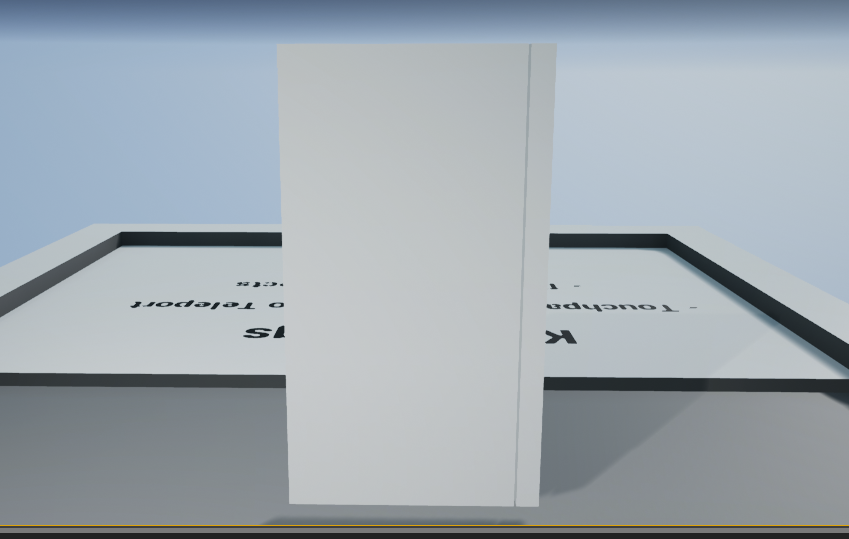
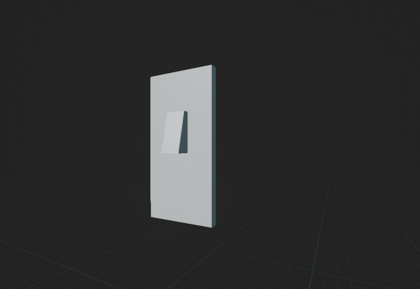
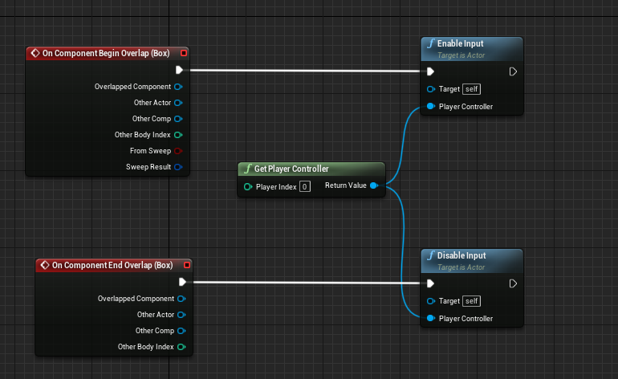
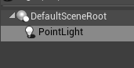

-
Domino World
Creator: Shell Games
Ik ben opzoek gegaan naar de best beoordeelde AR Games. Domino World is daar een van. Vroeger heb ik lang gespeeld met domino steentjes. Nu is er een AR game die de mogelijkheid biedt om in elke ruimte die je wilt een domino circuit te maken. Doormiddel van je camera en AR lijkt het net alsof er een domino circuit door bijvoorbeeld je keuken loopt. Ook is het voordeel van de app dat je niet per ongeluk een steentje om kan duwen, waardoor je helemaal op nieuw moet beginnen.
-
Minecraft Earth
Creator: Mojang
Minecraft is een van de meest populaire spellen onder de jongeren. In Minecraft kan je verschillende dingen doen, maar het gaat vooral om het bouwen van dingen. Je kan alles wat je wilt bouwen van huis tot kasteel of zelfs een hele stad. Nu bestaat er ook een game genaamd Minecraft Earth waar je deze dingen in het echte leven kan bouwen. Zo kan je bijvoorbeeld in je achtertuin een leuk tuinhuisje bouwen, of op het grasveld voor de deur een groot kasteel./p>
-
Peronio Pop-up book
Creator: Peronio
Peronio Pop-up book is een interactief boek. Dit is een exclusief idee die ik nog niet eerder heb gezien. Het boek gaat over het avontuur van een jongen die niet kan bepalen wat hij wilt doen in zijn jeugd. Tijdens het boek ga je verschillende uitdagingen en spellen doen, waardoor je helemaal in het verhaal mee gaat. Het is een app die gebruik maakt van VR en AR. Deze app is te spelen op een telefoon dus voor de meeste mensen makkelijk om te spelen. Voor het spelen is wel VR bril nodig waar je je telefoon in kan zetten, maar die is gemakkelijk zelf te knutselen.
AR & VR
Research
Tinkering
-
Tafel
Om eerst alle basics van het programma onder de knie te krijgen ben ik eerst rond gaan kijken en wat dingen geprobeerd. Uiteindelijk ben ik begonnen met het maken van een simpele tafel, Eerst heb ik het blad gemaakt, en daarna de poten verbonden aan de tafel. Hieronder is het uiteindelijke resultaat te zien:
 -
Deur
Het idee voor de eindopdracht had ik al snel. Mijn idee is om voor de eindopdracht een hotelkamer te maken die in VR te zien is. Om het programma zo goed mogelijk te beheersen ben ik gaan denken over wat voor functionaliteiten er in een hotelkamer zitten. Als eerste demo ben ik dus gaan proberen om een werkende deur te maken die open en dicht kan.
Eerst heb ik zelf de deur gemaakt in Unreal Engine. Het duurde een tijdje voordat ik door had hoe ik de deur een kleur gaf. Uiteindelijk na gezocht te hebben op google ben ik erachter gekomen hoe. Nadat ik de deur gemaakt had, ben ik gaan google hoe ik kon maken zodat hij open kan. Ik ben via Google op een tutorial gekomen waar dit uitgelegd werd en die heb ik na gedaan. Helaas kon ik dit niet testen, omdat ik geen controllers heb waarmee ik handen kan besturen in VR, maar ik heb wel geleerd doormiddel van de tutorial hoe ik een interactieve deur zou kunnen maken.
-
Lamp
Voor de tweede opdracht ben ik opnieuw gaan zoeken naar dingen die in een hotel kamer functioneel kunnen zijn. Bij de vorige opdrachten kon ik het niet testen, omdat ik de controllers voor de handen niet heb. Ik heb ervoor gekozen om dit keer een lamp te maken die je doormiddel van een schakelaar aan kan doen. Ook dit is niet te testen, omdat ik die controllers niet heb, maar ik vind het belangrijker om het programma te beheersen dan gelimiteerd zijn aan alleen de omgeving en geen functionaliteiten.
  Uiteindelijk zou ik een zelfde soort schema als hierboven moeten maken voor de lichtbron, alleen kwam ik er op dit moment achter dat de tutorial voor een first-person game is in plaats van een VR game. Hierdoor werkte het niet bij mij en ben ik gaan google naar een oplossing. Voor VR lampen ben ik weinig tegen gekomen helaas. Met deze tutorial ben ik wel te weten gekomen hoe ik een lamp maak die ik aan en uit kan zetten in een first person game, maar in een VR game ben ik er niet achter gekomen. Een ander punt dat ik geleerd heb is dat de mogelijkheden in een VR game anders zijn dan in een first person game en ik daar dus in het vervolg op moet letten.
Eindopdracht
-
De hotelkamer
Als eindopdracht heb ik zoals eerder gezegd een hotelkamer gemaakt die in VR te zien is. Het is mij niet gelukt om de deur en lampen werkend te krijgen, maar ik heb het op een andere manier opgelost. De reden waarom ik een hotelkamer in VR wilde maken is, omdat ik tijdens het boeken van een vakantie vaak een andere indruk krijg dan de werkelijkheid van het hotelkamer. Om dit te voorkomen lijkt het mij een goed idee om in VR een hotelkamer te kunnen zien. Het gaat mij dus vooral om het gevoel en de mogelijkheid om de hotel kamer te bekijken. Ik heb de assets van een tutorial gebruikt, om deze kamer zo in te richten en uiteindelijk is dit het resultaat:
Reflectie
-
Ik wist van te voren dat er veel mogelijk was met AR en VR, maar door wat research te doen ben ik erachter gekomen dat er echt heel veel mogelijkheden zijn. Ik dacht dat VR en AR vooral door bedrijven gebruikt werden, maar na deze opdracht ben ik erachter gekomen dat je er in je vrije tijd gewoon aan kan zitten. Ik vond het overigens wel erg lastig om Unreal Engine te gebruiken. In de tutorial online is het prima te volgen, maar dan blijkt dat er iets toch niet werkt en ik kwam er maar niet uit. Al met al met ik tevreden met mijn eind product, ik vond het leuk om eraan te werken. Helaas is mijn eindopdracht niet helemaal geworden zoals ik in gedachte had, maar het gevoel van een hotelkamer is in ieder geval terug te vinden. Al met al vond ik het een leuke, lastige en leerzame opdracht om te doen.